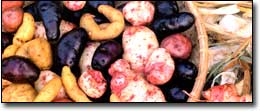
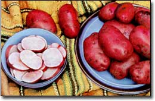
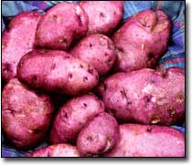
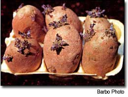
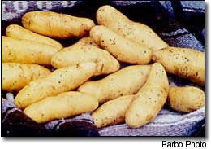
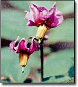
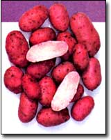
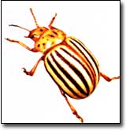
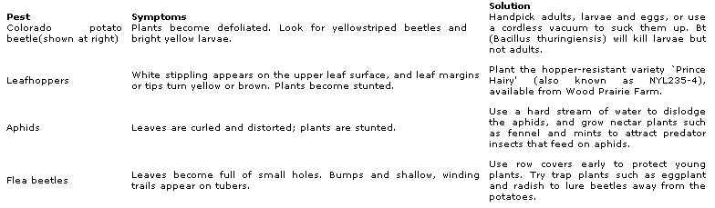

Tap on a freshly dug potato and it feels crisp, like an apple right off the tree. Cook that spud up immediately and savor a subtle nuttiness in its tender flesh - almond-like in some varieties, walnutty in others, tantalizing flavors that are quick to fade. So says William Woys Weaver, food historian and heirloom vegetable expert who tended 54 varieties of heirloom potatoes in his Pennsylvania garden last summer.
"Growing potatoes at home really is lots of fun," Weaver says. His culinary students at Drexel University help out in his garden, and those who have not previously grown potatoes are totally amazed. "It's like digging for gold," he says.
And anyone can do it. Potatoes are high-yielding veggies that really are easy to grow and store, and contrary to conventional wisdom, they do not require a lot of land.
A pound of seed stock, which takes about 10 feet of planting space in a row, can produce 15 to 25 pounds of delicious tubers. (Weaver's book, Heirloom Vegetable Gardening, has an excellent chapter on growing potatoes. See MOTHER'S Bookshelf, Page 94.)
If you use organic growing methods, you'll have delicious tubers without the chemicals used on store-bought spuds, which are routinely treated with pesticides and antisprouting compounds, and which may have been in storage for so long they've lost much of their flavor.
Growing potatoes at home also opens up a whole new world of varieties not available in the supermarket. Nearly 4,000 different kinds can be found just in the Andes, birthplace of the potato, according to the industry's Global Potato News, but fewer than 70 varieties are listed in the Potato Association of America's inventory, and only six types are commonly grown in commercial fields.
For home gardeners, the current Seed Savers Exchange (SSE) yearbook lists nearly 600 varieties offered by its members, including Clara Klettke of Spud'tacular Potato Research in Kulm, North Dakota. She says in the past 12 years, she personally has grown 735 varieties, and this year alone, she grew 350. Several mail-order companies across the country offer dozens of hard-to-find choices as well (see Page 42).
Potatoes come in a diversity of colors: purple, blue, yellow, and red or pink, in addition to white. Among Weaver's favorites is All-Red,' also called 'Cranberry Red,' a big midseason heirloom potato available to Seed Savers members and sold by most of the mail-order sources listed.
Potatoes with color sometimes fade when cooked, according to Weaver, but 'All-Red' remains a rosy pink. It also is never bitter; some colored potato varieties have toxins in their skins that can impart a bitter taste, but that characteristic can be bred out of them over time, he says, through careful seed stock selection.
"The flavor of 'All-Red' is rich, like English walnuts, even a bit earthy," Weaver writes in his book 100 Vegetables and Where They Came From. "Walnut oil in the salad dressing is a perfect match and a good way to enhance the flavor."
Along with 'All-Red,' several varieties of French "fingerling" potatoes, so named because they look a bit like a human finger, also have won Weaver's favor. These include 'Roseval,' a waxy, gourmet European salad potato introduced to the U.S. market in 1950 and still a standard among gourmets, and the heirloom 'La Ratte,' introduced in 1872 in Europe, and, says Weaver, "one of the best fingerlings to grow at home - productive and disease-free." Both are available through SSE.
PLANTING TIME
'All-Red,' also known as 'Cranberry Red,' remains a rosy pink inside even after it is cooked.
Although classified as a cool-season crop, potatoes are flexible and will grow well under a broad range of conditions. While they tend to be more productive in the northern tier of the United States and in southern Canada, they can be grown virtually anywhere in this country.
St. Patrick's Day, March 17, is the traditional potato-planting date, but regional weather conditions may dictate fudging a bit on that timing. In the South, start plants before temperatures regularly climb into the 90s. Determine your last average spring frost date and back off three weeks from there to set a planting date. Potato foliage is hardy to about 28 degrees, but the roots can withstand even more cold.
Klettke, in North Dakota, times her potato planting by feel. "After tilling," she says, "grab a handful of soil. If it feels cold, wait; potatoes can easily rot. The ground should be cool-to-warm to the touch."
In his book, Growing Vegetables West of the Cascades, Steve Solomon recommends using a fabric row tunnel-cover if you are determined to plant early, or waiting until May 15 to June 1. "Sowing later than this will greatly reduce the yield," he says, "but sowing earlier, even if frosts don't get them, will tend to make the vines dry out too soon, making it harder to store your crop over the winter." Many home growers just take their tater-planting cues from nature: When the dandelions bloom, it's time to set the spuds.
From planting time to harvest varies with variety. Some come on early, in 60 to 90 days; others are ready at midseason, in 90 to 110 days; and still others are late maturing, coming on in 110 to 135 days. Later varieties generally make the best storage crops, and most fingerling types fit between the mid- and late-season types.
In selecting which potatoes to plant, keep maturation dates in mind to ensure a steady harvest throughout the growing season and a storage crop as well. Jim Gerritsen of Wood Prairie Farm, Bridgewater, Maine, one of the country's largest producers of organic potatoes, recommends the following as one possible grouping that provides for harvests of great-tasting spuds from late spring to early fall:
`Caribe,' pronounced Ka-REE-bay, (early) is one of the prettiest potatoes you'll dig from your garden, with its purple skin and snow-white flesh. This variety makes excellent new potatoes, so it's hard to leave them in the ground; when allowed to mature, they grow fairly large and oblong.
`Rose Gold' (midseason) is the best of the redskinned, golden-fleshed potatoes, producing medium to heavy yields of medium-sized round tubers.
`Island Sunshine' (late), developed by organic farmers on Prince Edward Island, Canada, probably has the highest tolerance to potato late blight of any variety now being grown. The medium-sized, round tubers have gold skins and golden flesh, and the plants are heavy producers.
`Russian Banana' (fingerling; mid-to-late season) is an heirloom gourmet variety first grown by early Russian settlers. It produces a heavy set of flavorful, golden-skinned and golden-fleshed, crescent-shaped tubers with tapered ends. Their culinary qualities are considered unsurpassed.
CULTURE
'Caribe' sports purple skin and snow-white flesh.
Potatoes need at least six to eight hours of full sun a day and at least 1 inch of water per week from rain or deep watering. They will grow in any soil but prefer a light, well-drained sandy loam, high in organic matter and slightly on the acidic side.
For most vegetable crops, heavy soils can be amended with manure, but for potatoes, manure increases the chance of infection from potato scab, a disease that causes superficial reddish-brown spots on the surface of tubers. As the potatoes grow, the spots may expand and turn corky and necrotic. For a safer, alternative potato amendment, try compost and leaf mold.
Potato plants are started from small tubers called seed potatoes. Buy "certified seed stock," which is guaranteed disease-free. The best size is comparable to a hen's egg, but larger tubers can be cut into 1 1/2-to-2-inch-square pieces, each containing two to three eyes. Rest cut seed potatoes in a warm, dark place for a few days before planting, so the cuts develop calluses, which help protect the seeds from disease and rot.
To avoid those problems, Klettke prefers not to cut her seed tubers. "When you do," she says, "you open it up to disease. Besides, there is nothing wrong with planting an entire large tuber. It will send up shoots, too, and produce plenty of potatoes."
Seed potatoes can be "chitted" to hasten the development of the crop. To chit them, spread the tubers in open-topped crates, boxes or flats in a single layer (standing them in egg cartons also works well). Position the heaviest concentration of eyes to point upwards. A week or two before planting, place them in a warm location with a medium light level but no direct sunlight; the seed potatoes will produce strong, stubby sprouts.
TO HILL OR NOT TO HILL
Chitted (pre-sprouted) potatoes, ready for planting, sit in an egg carton.
Traditionally, potatoes are planted in "hills." A trench is dug about 4 to 6 inches deep, and the seed spuds are set in it, 12 to 15 inches apart. The trench is then back-filled until it is level with the soil surface. For home gardeners, the recommended spacing between rows is 24 inches.
When the plants are 8 inches tall, they are half-buried by hoeing soil up and over them from each side of the row. This is done at least twice as the plant grows, each time being sure to let some leaves show for continued growth.
After that, the hills should be heavily mulched with straw, dried leaves or other organic materials. Mulching helps the soil retain moisture and controls weeds; otherwise, frequent, shallow cultivation must be done. Mulching also assures that light does not reach the tubers; potatoes exposed to light turn green and produce a toxin that renders them inedible. (Such green tubers can, however, be safely used for seed stock the following spring.)
Klettke mulches, too, but in a different way. For starters, she reverses the hilling method by first hilling up the rows to create long, thin, raised beds, which leaves deep walkways in between the rows. She plants seed potatoes about 4 inches deep in the beds and then covers the beds with mulch. As the plants grow, she adds more mulch. "When I started, my soil was solid clay," she says, "so I added leaves, grass, straw - any organic matter - to continually improve it." Potatoes also can be grown successfully in various containers - and even without actually planting them in soil (see "Surface-Sown, No-Dig Spuds," Page 42).
HARVEST TIME
`Russian Banana' fingerling potatoes.
How big a harvest can you expect from these rows? "More than most crops," says Gerritsen of Wood Prairie Farm. "There are three factors that affect potato yields: relative fertility - rich soils produce greater yields; watering - the soil surrounding them should be consistently moist but not soaking wet; and to what extent you successfully keep insects and disease pressures at bay."
If all three factors are right, he says to "expect to harvest at least 10 times as many pounds as you plant. Even higher yields are not unusual."
Potato tubers begin forming when the flowers fade; after that, the crop can be harvested as needed.
For day-to-day new potatoes, merely work the soil under the plants with your hand or a fork until you encounter the small. tubers. Gently break off those you want and re-cover the rest.
To harvest potatoes for storage, wait until the plants have died back completely. In dry weather, if temperatures are below 80 degrees, let the crop cure by allowing the tubers to lay on the soil surface for a day or two. If temperatures consistently exceed 80 degrees, sunlight can cause the potatoes to turn green and rot; in this case, collect them immediately and place them in a dark, well-ventilated place to cure for 10 days at 60 to 65 degrees and 85 percent humidity.
After curing, tubers will keep for several months without sprouting if kept in complete darkness at 40 to 45 degrees and high humidity. For potato storage, heirloom gardener Weaver recommends buying a cheap, old-fashioned refrigerator and keeping it set at 40 degrees (a box of moist leaves or sawdust in an unheated garage or basement is another alternative if no refrigerator is to be had). In his potato fridge, Weaver keeps his eating potatoes and two or three egg cartons full of each variety of next year's seed potatoes. (For more ideas on storing potatoes and other crops, read Root Cellaring, available on MOTHER'S Bookshelf, Page 94, or go to "Books and Plans" at http://www.motherearthnews.com.
Surface-Sown, No-Dig Spuds
An offbeat technique popularized by Ruth Stout in her book Gardening Without Work is to plant potatoes without actually burying the seed. The tactic goes under several names: Henry Doubleday Research Association (HDRA), England's premier organic gardening group, calls it "no-dig potatoes;" the Illinois Extension Service calls it "straw potatoes;" Ronniger's Potato Farm in Idaho merely refers to it as "the mulch method" and notes the technique is particularly good if you have shallow, rocky or compacted soil.
The idea is based on the fact that tubers will grow from potato stems if they are shielded from light. As long as the seed potatoes have contact with soil somewhere, they will send down roots for the nourishment they need to keep producing.
To plant a "no-dig potato patch," simply lay the seed potatoes on the surface, spacing them at regular intervals. You can lightly press the seed into the soil surface if you want, but it's not necessary. Cover the seed potatoes with several inches of straw or other mulch. As the plants emerge, add more mulch. HDRA recommends a final layer of grass clippings rather than straw to totally seal out light. (The grass clippings also will release nitrogen and other nutrients.) When you are ready to harvest your crop, merely lift the mulch and harvest the potatoes; they will be much easier to find and cleaner than if you'd grown them in soil.
Seed Potato Sources
Wood Prairie Farm 49 Kinney Road Bridgewater, ME 04735
(800) 829-9765; www.woodprairie.com
Moose Tubers Fedco Seeds PO. Box 520; Waterville, ME 04903
(207) 873-7333; www.fedcoseeds.com
Ronniger's Potato Farm HCR62 Box 332A Moyie Springs, ID 83845
(208) 267-7938; www.ronnigers.com
Johnny's Selected Seeds 955 Benton Avenue Winslow, ME 04901
(207) 861-3901; www.johnnyseeds.com
Territorial Seed Company PO. Box 158 Cottage Grove, OR 97424
(541) 942-9547; www.territorialseed.com
Combatting Common Potato Pests
No matter how you grow them, potatoes are susceptible to several pests and diseases. "The first stage in controlling them," says potato grower Jim Gerritsen of Wood Prairie Farm in Bridgewater, Maine, "is to identify your enemies." You have to know if it's an insect or disease situation, or possibly even a fertility problem. Late blight, a fungal disease, preys on plants that have run out of nutritional steam. "If you have your soil tested and provide adequate nutrition," Gerritsen says, "the plants will grow right through it." For the best protection, start with certified seed of blight-resistant varieties.
Mother Earth News
|
 |
 |
 |
|
 |
 |
 |
|
 |
 |
 |